왜 운동을 오래 배워도
회원의 몸을 제대로
분석하기 어려울까요?
운동을 얼마나 많이 알고 있는가보다 중요한 것은
왜 이 사람에게, 지금 이 운동이 필요한지
판단할 수 있는가입니다.
BODY1ST는 지난 11년간 3,000여 명의 전문가를 교육하며
그 답을 ‘분석’에서 찾아왔습니다.
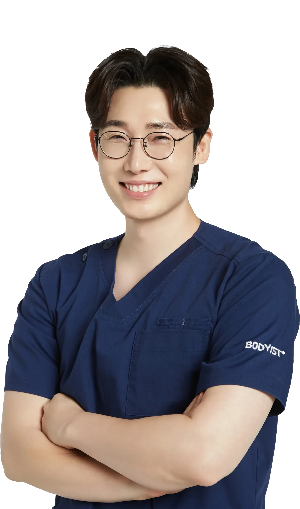
먼저, 교육생들의 이야기를 들어보세요.
01오랜 경력에도 풀리지 않던 고민,
BODY1ST에서 다시 답을 찾기 시작했습니다.
02몸을 보는 방식이 달라졌습니다
03수업을 만드는 기준이 달라졌습니다
솔직히 재활 관련 석사과정 중이고 여러가지 자격증을 취득하였지만 필드에서 가장 도움을 준 강의는 ‘바디퍼스트 입문자 과정’이었습니다.
” — 재활 관련 석사 중 · 센터 관장 이**님
몸을 바라보는 기준이 달라지면
수업을 만드는 방식도 달라집니다.
눈에 보이는 한두 가지 특징이 아니라 몸 전체의 관계와 패턴을 보기 시작합니다.
알고 있는 운동 중 하나를 고르는 것이 아니라 왜 지금 이 운동이 필요한지를 판단합니다.
느낌이나 경험에만 의존하지 않고 평가한 정보를 근거로 자신의 판단을 설명합니다.
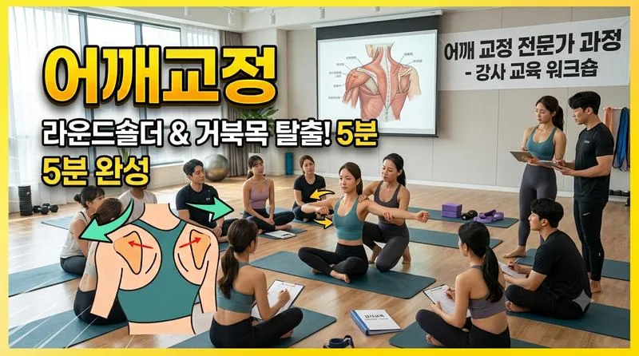
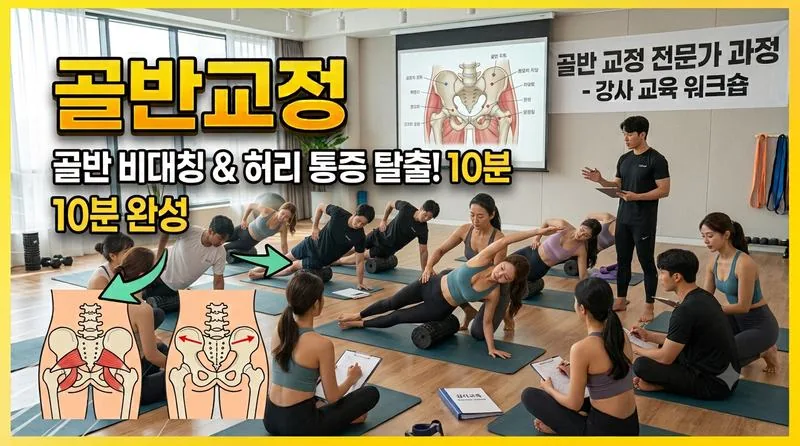
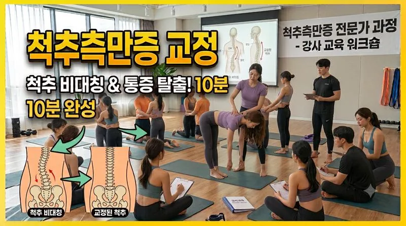
교육을 들을수록
알고 있는 운동은 계속 늘어납니다.
그런데 막상 회원을 마주하면
결국 이런 질문 앞에서 멈추게 됩니다.
“그래서 이 사람에게는
무엇부터 해야 하지?”
그리고,
“왜 지금
이 운동이어야 하지?”
이 질문에 명확하게 답하기 어렵다면,
문제는 운동의 종류가 부족해서가 아닐 수 있습니다.
더 많은 운동보다 먼저,
몸을 보고 판단하는 기준이 필요합니다.
분석은 단순히
몸의 특징을 찾는 일이 아닙니다.
어깨가 높고, 골반이 기울고,
무릎의 정렬이 달라 보이는 것.
이것을 발견하는 것은 분석의 시작일 뿐입니다.
중요한 것은 흩어져 있는 정보를 연결해
왜 이런 모습과 움직임이 나타나는지 추론하고,
무엇부터 바꿔야 하는지 판단하는 것.
BODY1ST는 이 과정을 하나의 흐름으로 연결합니다.
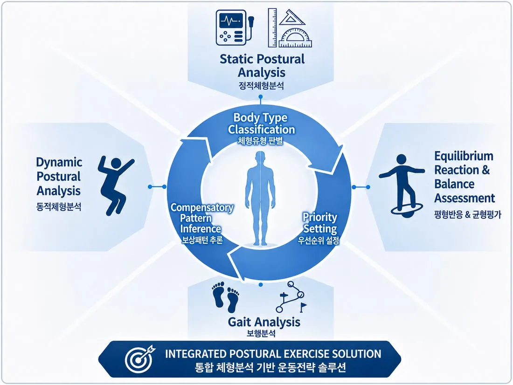
분석은 보이는 체형을 넘어,
몸의 패턴을 읽고 그 사람에게 필요한
운동의 방향을 설계하는 과정입니다.
보이는 모습은 시작점일 뿐,
해석은 그 이후부터 시작됩니다.
정적 체형분석
190개 지표
전면 · 후면 · 좌측 · 우측의
정렬과 신체 관계를 관찰합니다.
동적 체형분석
8가지 움직임 평가
경추 · 흉요추 · 상지 · 하지의 움직임에서
나타나는 패턴을 확인합니다.
평형반응 · 균형평가
균형에 대한 신체 반응
균형이 달라지는 상황에서
몸이 어떻게 반응하는지 확인합니다.
보행분석
전신 움직임 패턴
걷는 과정에서 나타나는
신체의 연결과 움직임을 관찰합니다.
정확하게 측정하고,
체계적으로 연결하고,
하나의 솔루션으로 통합합니다.
회원의 몸은 매번 다르기에
하나의 정답을 모든 사람에게 적용할 수 없습니다.
BODY1ST는 보고, 연결하고, 추론하고, 판단하는
전문가의 사고과정을 훈련합니다.
선택의 기준을 배웁니다
정보를 연결합니다
스스로 추론합니다
현장에서 검증합니다
더 많은 운동을 아는 것보다,
왜 이 운동을 선택했는지 설명할 수 있는 전문가로.
몸을 보는 기준을,
이제 직접 배워보세요.
BODY1ST의 교육은 입문자과정에서 시작합니다.
다음 입문자과정 모집이 시작되면
대기신청자에게 가장 먼저 안내드립니다.
대기신청은 수강신청이나 결제진행이 되지 않습니다.
BODY1ST의 전체 분석 체계를 처음부터 끝까지 배우고,
수강기간 동안 실습을 제외한 모든 교육 내용을
제한 없이 반복해서 학습합니다.
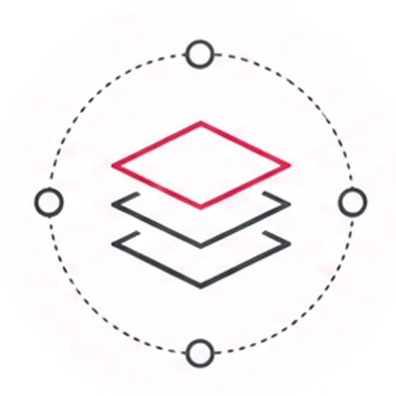
01전체 시스템 학습
BODY1ST 전체 분석 체계
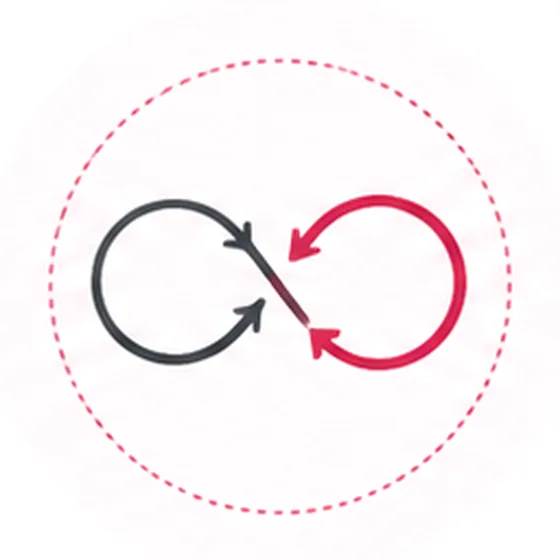
02무제한 반복 수강
수강기간 내 반복 학습
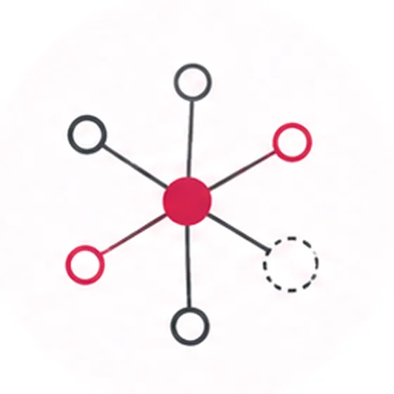
03분석적 사고의 연결
정보를 연결해 패턴을 이해
처음에는 기준을 배우고, 반복할수록 연결됩니다.
체형분석의 기초 이론부터 정적 · 동적 체형분석, 근육과 관절의 이해,
보상패턴, 보행과 균형, 실제 운동 적용까지.
단편적인 기술을 하나씩 배우는 것이 아니라
몸을 보고, 해석하고, 운동으로 연결하기 위한 전체 과정을 학습합니다.
600
세분화된 온라인 커리큘럼
수강기간 동안 실습을 제외한
전체 온라인 교육을
횟수 제한 없이 반복 수강할 수 있습니다.
FOUNDATION
체형분석의 기준을
세웁니다.
체형분석 기초 이론부터 근골격계 문제를 바라보는 관점, 촉진 · 마킹 · 촬영의 기본 기준까지.
몸을 보기 전에 무엇을 기준으로 볼 것인지부터 배웁니다.
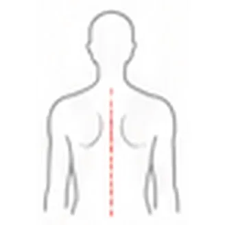
02STATIC POSTURAL ANALYSIS
정적인 체형을
세밀하게 읽습니다.
전면 · 후면 · 측면에서 나타나는 관절의 정렬과 신체 부위의 관계를 세분화해 학습합니다.
어깨, 골반, 척추, 무릎, 발목 등 BODY1ST의 정적 체형분석 기준을 익힙니다.
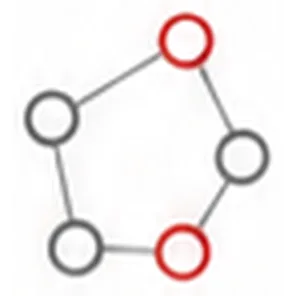
03BODY TYPE & PATTERN
보이는 특징을
패턴으로 연결합니다.
다양한 체형유형과 각 유형에서 나타나는 특징을 학습하고, 한 부위만 따로 보는 것이 아니라
여러 신체 정보를 연결해 체형을 해석하는 방법을 배웁니다.
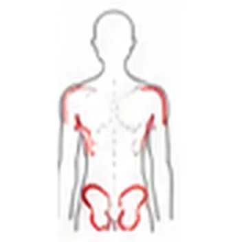
04ANATOMY & MOVEMENT
근육과 관절을
움직임 속에서 이해합니다.
목, 어깨, 척추, 골반, 고관절, 무릎, 발목까지 주요 관절과 근육을 학습합니다.
단순히 해부학적 위치를 외우는 것이 아니라 실제 움직임에서 어떤 역할을 하는지 연결합니다.
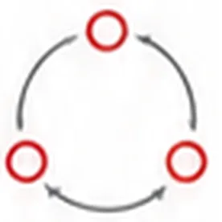
05COMPENSATION & INTEGRATION
보상패턴을
추론합니다.
어깨 · 골반 · 고관절 · 무릎 · 발목 등에서 나타나는 다양한 결합 패턴과 움직임을 살펴봅니다.
각각의 문제를 따로 판단하지 않고 여러 평가 결과를 연결해 왜 이런 패턴이 나타났는지 추론합니다.
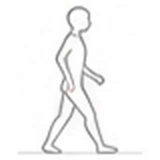
06GAIT · BALANCE · EXERCISE
분석을 실제 운동으로
연결합니다.
보행분석, 평형반응과 균형, 스쿼트 · 런지 · 데드리프트 등 실제 움직임까지 학습합니다.
분석한 결과를 바탕으로 실제 수업에서 어떤 운동을 어떻게 적용할지 연결합니다.
한 번에 외우기 위한
600개의 강의가 아닙니다.
무엇을 보는지 배우고
정보 사이의 관계가 보이고
분석은 더 깊어집니다.
수강기간 동안 실습을 제외한 전체 온라인 커리큘럼 무제한 반복 수강
BODY1ST 입문자과정
커리큘럼
4개 챕터 · 600강으로
구성되어 있습니다.
단편적인 운동법이 아니라,
몸을 보는 하나의 체계를 배웁니다.
처음 배우기 때문에 ‘입문’이지,
일부만 배우기 때문에 ‘입문’은 아닙니다.
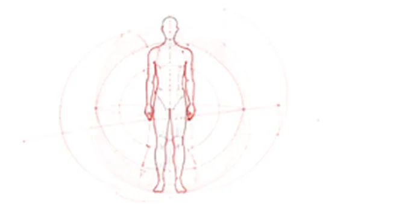
많은 지도자들이 비슷한 고민을 반복하고 있습니다.
혹시, 당신의 이야기이기도 한가요?
회원의 체형을 봐도
어디부터 봐야 할지 막막했던 적이 있다.
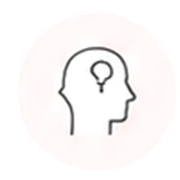
운동은 많이 알고 있는데
회원마다 무엇부터 적용해야 할지 고민된다.
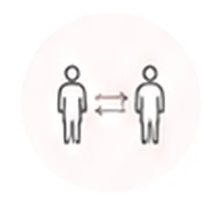
비슷한 체형에 같은 운동을 적용했는데
결과가 다르게 나온 경험이 있다.
회원에게 “왜 이 운동을 해야 하는지”
명확하게 설명하고 싶다.
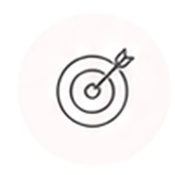
운동을 알려주는 사람이 아니라
몸을 분석하고 판단할 수 있는 전문가가 되고 싶다.
하나라도 내 이야기처럼 느껴졌다면
지금 필요한 것은
더 많은 운동이 아니라
몸을 판단하는 기준일 수 있습니다.
BODY1ST 입문자과정이
그 기준을 배우는 시작점이 될 수 있습니다.
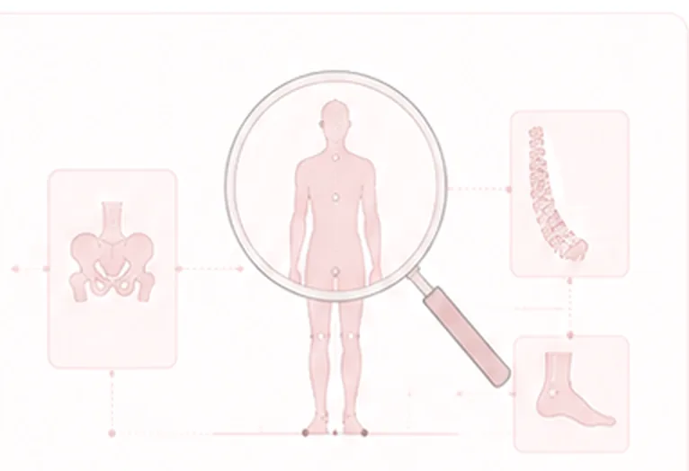
i
대기신청은 결제가 아닙니다.
모집이 시작되면 가장 먼저 안내해드립니다.
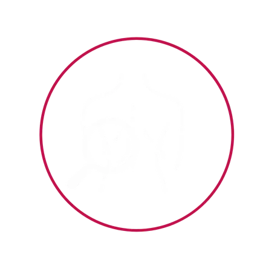
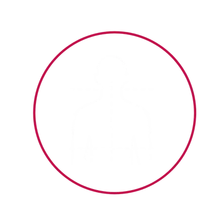
더 많은 운동을 외우는 것보다
왜 이 사람에게 이 운동이 필요한지
스스로 판단할 수 있는 기준을 만들어보세요.
BODY1ST를 처음 시작하는 과정,
체형분석운동 지도자 입문자과정
다음 모집이 시작되면
대기신청자에게 먼저 안내드립니다.
대기신청은 결제가 아닙니다.
모집 일정이 확정되면 우선 안내해드립니다.
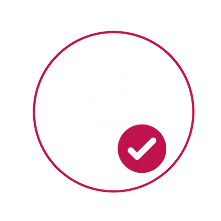
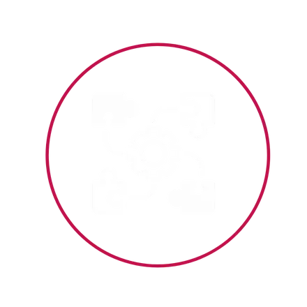